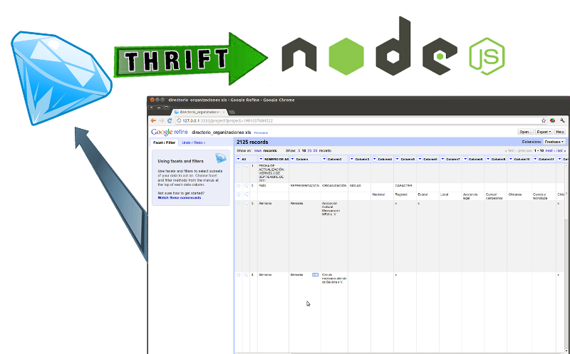

JSConf - 19 de Mayo J. A. Diaz Trepat
You can navigate with → and ↓.
Also space gives an exposé mode that might break your browser.
Padres: Joaquin Adauto Diaz Trepat
Estado: Joaquin Adaucto Diaz Trepat
Cliente: "Hola juaquin..."
Los datos varian segun a quien le preguntamos
No es una mala aproximacion entonces, utilizar ajax para validar los datos de esta forma.
$(document).ready(function () { var validateUsername = $('#validateUsername');
$('#username').keyup(function () {
var self = this; if ( this.value != this.lastValue ) { if (this.timer) clearTimeout(this.timer); validateUsername.removeClass('error').html('<img src="images/ajax-loader.gif" /> checking availability...'); this.timer = setTimeout(function () { $.ajax({ url: 'url-to-validation.php', data: 'action=validateusername&username='+self.value, dataType: 'json', type: 'post', success: function (j) { validateUsername.html(j.msg); } }); }, 100); this.lastValue = this.value;
} });});
Un framework creado por facebook y liberado en 2008 a Apache. Crea servicios livianos posibilitando comunicacion entre lenguajes
Creando un simple idl
struct SomeStruct { 1: string someString, 2: i32 someInt}
exception InvalidOperation { 1: i32 what, 2: string why}
service SomeService {
string someMethod(1:SomeStruct structure ) throws (1:InvalidOperation ouch);}
Luego simplemente tipeamos
jd@hefesto:~/cointreau$ thrift --gen js:node thrift_file.idl
Creando un server simple
var thrift = require('thrift');var SomeService = require('./gen-nodejs/SomeService.js')var ttypes = require('./gen-nodejs/SomeService_types.js');
var port = 5000; // El puerto
var server = thrift.createServer(SomeService, { someMethod: function (struct, callback) { // Here goes your implementation if (struct) { return callback(null, "El valor no es ningun valor falsy"); } else { var error = new Error("El valor es un valor falsy"); return callback(error, null); } }});server.listen(port);
Creando un cliente simple
var thrift = require('thrift');var SomeService = require('./gen/SomeService.js');var ttypes = require('./gen/SomeService_types.js');
var host = "127.0.0.1"; // Aca el host o la IP
var port = 5000; // Y aca va el port que definimos arriba
var connection = thrift.createConnection(host, port);
var client = thrift.createClient(SomeService, connection);
connection.on('error', function (err) { // Error handling if (err) { console.log(err.message); process.exit(); }});var callMethod = function (string, number, callback) { var arg = {}; arg.someString = string; arg.someInt = number;
var structure = new ttypes.SomeStruct(arg); client.someMethod(arg, callback);};
callMethod("Esto es un string", 2.3, function(err, resp) { console.log("Error: "+err); console.log("Response: "+resp); process.exit();});
Utilizando GlusterFS, todos los nodos, pueden operar en el mismo file system. Esto tambien termina formando parte de la comunicación
Serializa las transformaciones en JSON
Un cliente muy comodo para trabajar con los datos
Podiamos extenderlo para que entendiera thrift
Conectamos nuestros servicios thrift con el G.Refine
Modularizacion, resolvia el problema del linker.
Rompe con la torre de babel entre el servidor y el cliente
y nos encanta JavaScript ❤
Su expresividad, codigo compacto.
Su velocidad de desarrollo
No esta maduro, y hay cosas basicas que no estan implementadas a fondo.
Debugger: node-inspector + chrome devtools
Desarrollar un frontend.
Ante un crecimiento desmedido implementar MapReduce en js